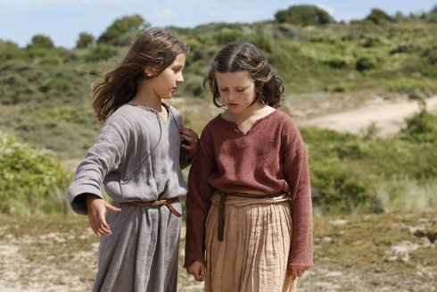

Jeannette, l’enfance de Jeanne
d’Arc
Jeannette: The Childhood of Joan of Arc

Bruno Dumont
|
115 min – HD – Französisch B: Bruno Dumont – K: Guillaume Deffontaines – S: Bruno Dumont, Basile Belkhiri – M: Igorrr – P: 3B Productions, Arte France – V: Luxbox – Mit Lise Leplat Prudhomme, Jeanne Voisin, Lucile Gauthier, Aline Charles
|
sonntag 14 okt 11.00 theatiner
Ein Heavy-Metal- und Rap-Musical über die Kindheit von Jeanne
d’Arc, basierend auf einem modernen Mysterienspiel aus dem Jahre
1910. Die (selbst)bewusst schlaksig-tapsigen Tanz- und
Gesangseinlagen sind dargeboten von Laiendarstellern mit teils
recht eigenwillig-eindrücklichen Gesichtern. Bei diesem spirituell
durchaus ernsthaften, minimalistisch-bizarren Camp-Gustostück,
kann man endlich einmal sagen: Das habe ich so noch nie gesehen.
(Viennale´17)
„Was Dumont als Singspiel beginnen ließ, wird zu einem
Metal-Musical, bei dem die Schwester ihre Kopfbedeckung abnimmt,
und dann wird ordentlich geheadbangt. Das könnte man als ein
ironisches Manöver sehen. Aber Dumont erreicht damit sein Ziel:
Seine Jeanne wirkt wie neu geboren, und nach dem Film Jeannette
könnte man auch den Rest ihrer Geschichte wieder ganz von vorn
erzählen. Der ganze Interpretationswust ist wie – von wilden Riffs
– weggeblasen. Ein Wunder, ganz ohne Firlefanz.” (Bert Rebhandl)
Bruno Dumont Geboren 1958 in Bailleul, Nordfrankreich. In seiner über 20-jährigen Karriere schuf er kontroverse Filme, in denen er von den Mysterien unserer alltäglichen Realität erzählt und der Frage nach der Existenz des Bösen und dessen Banalität nachgeht. Dabei gehört er zu den originellsten Regisseuren der internationalen Filmszene, der sich jüngst der grotesken Komödien zugewandt hat. 2018 erhielt er in Locarno den Ehrenleoparden. |
| Filme Twentynine Palms 2003 – Flandres 2009 – Hadewijch 2009 – Camille Claudel 1915 – P'tit Quinquin 2014 – Ma Loute 2016 – Jeannette 2017 |